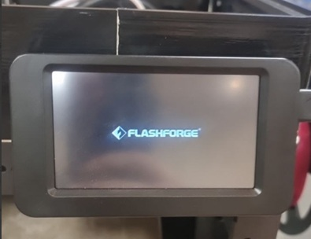
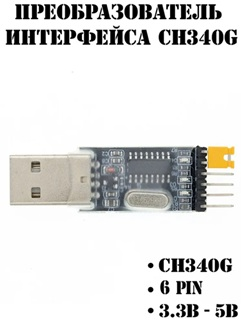
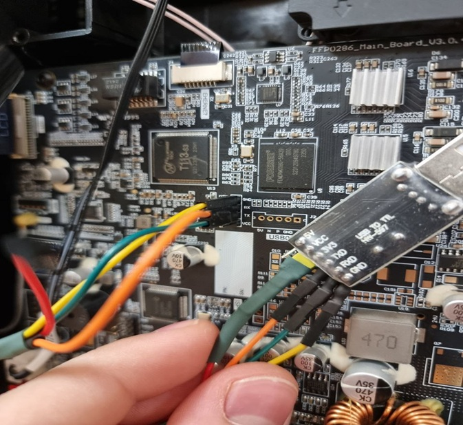
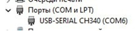

Einrichtung
Installation¶
Drucker auf Werkseinstellungen zurücksetzen (erforderlich für die Installation des Mods)¶
- KlipperMod deinstallieren, wenn er installiert wurde
- Setzen Sie den Drucker auf die Standardeinstellungen zurück.
- den USB-Stick auf FAT/FAT16/FAT32 formatieren
-
Legen Sie die Datei von Native Firmware in den Stammordner des USB-Flash-Laufwerks
- Adventurer5M-3.1.9-2.2.3-20250807-Factory.tgz für FF5m
- Adventurer5MPro-3.1.3-2.2.3-20250107-Factory.tgz für FF5mPro Version
- AD5X-1.1.7-1.1.0-3.0.6-20250912.tgz для AD5X
-
Schalten Sie den Drucker aus
- Stecken Sie den USB-Stick in den Drucker
- Schalten Sie den Drucker ein
- Warten Sie, bis die native Firmware installiert ist.
- WiFi oder Lan einrichten neuer Biber
- Holen Sie sich die neuesten Drucker-Updates oder installieren Sie die Firmware 1.1.7 für AD5X bzw. 3.2.3 für AD5M/AD5MPro, wenn Sie nicht möchten, dass der Drucker vor jedem Druckauftrag die Mitte des Druckbetts misst
Installieren der Mod¶
- Drucker auf Werkseinstellungen zurücksetzen Vorsicht AD5X
- formatieren Sie den USB-Stick auf FAT/FAT16/FAT32
-
Legen Sie file im Stammverzeichnis des USB-Flash ab.
- für FF5M: Adventurer5M-zmod-*.tgz
- für FF5MPro: Adventurer5MPro-zmod-*.tgz
- für AD5X: AD5X-zmod-*.tgz
-
Schalten Sie den Drucker aus
- Stecken Sie den USB-Stick in den Drucker
- Schalten Sie den Drucker ein
- Warten Sie auf die Installation des Mods
Auf dem AD5X kann die Installation bis zu 40 Minuten dauern.
- Entfernen Sie den USB-Stick
- Schalten Sie den Drucker aus
- Schalten Sie den Drucker ein
-
Drucker-IP im Browser öffnen
Wenn sich das Webinterface nicht öffnet, hat die native Firmware den Mod deaktiviert. Um sie zu aktivieren, müssen Sie die USB-Flash-Datei AD5X-ENABLE-zmod.tgz und activate mod schreiben.
-
Übersetzen Sie die Mod in Ihre Sprache.
Oder geben Sie in der Konsole
`LANG LANG=ruein. -
Konfigurieren Sie die Mod
Dies zeigt die Parameter, die am Anfang und am Ende verwendet werden, sowie die globalen Prameter. Es wird empfohlen, die Einstellungen nur zu lesen, sie aber nicht zu ändern. Die Werte der einzelnen Einstellungen können hier eingesehen werden.
Sie müssen zum letzten Bildschirm gelangen und auf "OK" oder "Neustart" drücken. Wenn du das nicht tust, wird dieses Fenster bei jedem Start erscheinen
Wenn Sie dieses Fenster wieder sehen wollen - dann geben Sie
GLOBALin die Konsole ein -
Gehen Sie zu
Einstellungen->Software Updates. - Klicken Sie auf "Nach Updates suchen" und warten Sie, bis die Updates geprüft wurden.
-
Klicken Sie auf Update und aktualisieren Sie alle Komponenten.
Wenn es viele Fehler anzeigt, ist das normal. Plugins sind nicht Teil der Firmware und werden separat heruntergeladen. Sie müssen auf "Nach Updates suchen" klicken. Stellen Sie dann alle Plug-ins wieder her und aktualisieren Sie sie nacheinander. Der Drucker wird neu gestartet.
-
Aktivieren Sie Empfehlungs-Plugin
Oder geben Sie in der Konsole
`ENABLE_PLUGIN name=recommendein. -
Orca anpassen Der gesamte Startcode muss durch diesen ersetzt werden:
START_PRINT EXTRUDER_TEMP=[nozzle_temperature_initial_layer] BED_TEMP=[bed_temperature_initial_layer_single] M190 S[bed_temperature_initial_layer_single] M104 S[düse_temperatur_anfangsschicht] SET_PRINT_STATS_INFO TOTAL_LAYER=[total_layer_count]START_PRINT EXTRUDER_TEMP= BED_TEMP=muss in eine Zeile geschrieben werdenDer endgültige Code zu diesem:
END_PRINTCode, bevor Sie die Ebene in diese ändern:
`SET_PRINT_STATS_INFO CURRENT_LAYER={layer_num + 1}.Es ist notwendig, auf das Protokoll "Octo/Klipper" umzuschalten:
- Protokoll:
Octo/Klipper.- Hostname: "IP-Druckername:7125".
- Url-Adresse des Hosts:
IP_printeroderIP_printer:80
- Protokoll:
-
- FAQ lesen
Achtung AD5X¶
Nach der Installation der Native Firmware kann es vorkommen, dass der Druckkopf nicht richtig am Filamentempfänger geparkt ist (Unterklemmen des Empfängervorhangs, Herausdrücken des Filaments auf dem Tisch usw.).
Über das Engineering-Menü der nativen Firmware
Wenn Sie auf diese Situation stoßen, müssen Sie das Parken mit Hilfe des folgenden Algorithmus kalibrieren:
- Laden Sie das Archiv Set.XY.Offset.zip herunter und entpacken Sie es in das Stammverzeichnis des Flash-Laufwerks
- Stecken Sie das Flash-Laufwerk in den ausgeschalteten Drucker und schalten Sie ihn ein. Die Kalibrierungsschnittstelle wird auf dem Bildschirm des Druckers angezeigt. Sie müssen auf Reset drücken.
- Verwenden Sie die Steuerpfeile, um den Druckkopf so am Empfänger zu parken, dass der Druckkopf genügend Druck auf den Verschlusshebel ausübt, die Düse hinter dem beweglichen Verschluss liegt und der Verschluss selbst mit der Vorderseite des Empfängers bündig ist.
- Sichern Sie das Kalibrierungsergebnis mit der Set-Taste.
- Entfernen Sie den Speicherstick und starten Sie den Drucker neu.
Aktualisieren Sie die Mod¶
Wenn der Mod sagt Update zMOD vom Flash-Laufwerk, müssen Sie zMod vom Flash-Laufwerk aktualisieren, auch wenn Sie es kürzlich aktualisiert haben.
Wenn Sie von einem USB-Stick aktualisieren, werden alle Daten gespeichert.
Der einfachste Weg, zMod von einem USB-Stick zu aktualisieren, ist die Verwendung des Makros ZFLASH.
In diesem Fall müssen Sie den Stick in den Drucker stecken, den Drucker neu starten und das Makro "ZFLASH" aufrufen.
- Das Makro sucht nach der letzten aktuellen Version
- Laden Sie die neueste Version für Ihr Druckermodell herunter
- Überprüft die Prüfsummen
- Neustart des Druckers
- Die neue Version wird nach dem Neustart automatisch installiert (der USB-Stick muss nicht entfernt werden, Sie können ihn für künftige Aktualisierungen im Drucker belassen).
- Gehen Sie dann auf die Registerkarte "Einstellungen" -> "Software-Update". Klicken Sie auf "Nach Updates suchen" und installieren Sie die neuesten "ZMOD"-Updates.
Wenn es viele Fehler anzeigt, ist das normal.
Denn die Plugins sind nicht Teil der Firmware und werden separat heruntergeladen.
Sie müssen auf "Nach Updates suchen" klicken. Und die Plug-ins nacheinander wiederherstellen und aktualisieren. Der Drucker wird neu gestartet.
Sie können die aktuelle Version des Betriebssystems des Mods unter der Registerkarte "System" -> "Verteilung" einsehen
Die aktuelle Version von zMod (Registerkarte "Einstellungen" -> "Update" -> "ffm5/zmod"), muss in den ersten beiden Ziffern mit der Version auf der Registerkarte "System" übereinstimmen.
Wenn sie nicht übereinstimmen, wird die Mod nicht richtig funktionieren, in diesem Fall beschweren Sie sich nicht über ZMOD.
Update über USB-Stick:
- den USB-Stick auf FAT/FAT16/FAT32 formatieren
-
Legen Sie file in den Stammordner des USB-Sticks.
- für FF5M: Adventurer5M-zmod-*.tgz
- für FF5MPro: Adventurer5MPro-zmod-*.tgz
- für AD5X: AD5X-zmod-*.tgz
-
Schalten Sie den Drucker aus
- Stecken Sie den USB-Stick in den Drucker
- Schalten Sie den Drucker ein
- Warten Sie den Neustart des Druckers ab (entfernen Sie den USB-Stick nicht)
- Warten Sie auf die Installation des Mods
- Wenn der Drucker schreibt, dass die Installation abgeschlossen ist
- Ziehen Sie den USB-Stick heraus
- Schalten Sie den Drucker aus
- Schalten Sie den Drucker ein
- Gehen Sie in Fluidd/Mainsail auf die Registerkarte
Einstellungen->Software-Update. Klicken Sie auf "Nach Updates suchen" und installieren Sie die neuesten "ZMOD"-Updates.
Hilfe Entwicklung¶
BTC 17wXTd9BqYp1K3zCLTxVyGLEXUDjf7XNLL.
Löschen - vorübergehende Deaktivierung der Mod¶
- SKIP_ZMOD - Makro zum Neustart ohne Moonraker und Fluidd zu starten
- REMOVE_ZMOD - Makro zum Entfernen von Mods
Es wird empfohlen, die Mod über das Makro REMOVE_ZMOD zu entfernen, die Entfernung über ein Flash-Laufwerk nur zu verwenden, wenn es keine Möglichkeit gibt, das Makro auszuführen.
Achtung!
- Wenn Sie Klipper 13 benutzen, ist es notwendig,
UPDATE_MCUauszuführen. Dadurch wird die Situation vermieden, dass MCU und Klipper unterschiedliche Versionen haben. - Wenn Sie Plug-Ins aktiviert haben, müssen Sie diese zuerst deaktivieren
DISABLE_PLUGIN name=g28_tenz.
Entfernen Sie die Mod komplett `REMOVE_ZMOD FULL=1.
Deinstallation des Mods über ein Flash-Laufwerk:
- Formatiere das Flash-Laufwerk auf FAT/FAT16/FAT32
- Lege die Datei flashforge_init.sh auf diesem Flash-Laufwerk ab
- Schalten Sie den Drucker aus
- Stecken Sie den USB-Stick in den Drucker
- Schalten Sie den Drucker ein
- Der Drucker wird 3 Mal neu starten
- Entfernen Sie das Flash-Laufwerk und verwenden Sie die Standard-Firmware
Wie aktualisiere ich die Standard-Firmware?¶
- deaktivieren Sie alle aktiven Plugins außer recommend, timelamse, notify (
DISABLE_PLUGIN name=plugin_name). - Wenn Sie Klipper 13 benutzen, sollten Sie
`UPDATE_MCUdurchführen, bevor Sie die native Firmware aktualisieren. Dadurch wird die Situation vermieden, dass MCU und Klipper unterschiedliche Versionen sind. - Aktivieren Sie die chinesische Wolke, wenn Sie das Update vom nativen Bildschirm aus durchführen wollen
`SAVE_ZMOD_DATA CHINA_CLOUD=1.
Wenn der native Bildschirm das Update nicht findet:
- Ihre Seriennummer wurde noch nicht von der Update-Verteilung getroffen
- Installieren Sie das native Firmware-Update von einem USB-Stick
Für AD5X erfordert Aktivieren Sie zMod über AD5X-ENABLE-zmod.tgz von einem USB-Stick, nach dem Stock-Update.
Boot wiederherstellen¶
Autoren der Anleitungen: @darksimpson, Alexander, @Ikaros413, @SoloMen88
Für diejenigen, die einen Drucker haben, der beim Einschalten im Bildschirmschoner hängen bleibt und nicht per LAN-Kabel erreichbar ist.

Versuchen Sie, die Firmware über eine vollständige Firmware-Installation wiederherzustellen:
- FF5M
- AD5X](/de/Native_FW/#Vollständige-Firmware-auf-Ad5x-installieren)
Wiederherstellungs-Algorithmus:
- Schalten Sie den Drucker aus
- UART/USB-Konverter vorbereiten (3,3V- oder 5V/3,3V-Jumper erforderlich)

WARNUNG! Der Konverter muss mit 3,3 Volt betrieben werden, bei 5 Volt brennt der Prozessor durch!
- Öffnen Sie die Rückseite des FlashForge.
- Verbinde mit dem UART-Pin auf der Platine (RX, TX, GND, 3.3V nicht anschließen).

Sie MÜSSEN den Jumper (wenn Sie einen haben) von 5V auf 3,3V umstecken. Wenn Sie auf 5V anschließen, müssen Sie die Hauptplatine ersetzen. So sollte der Anschluss am Ende aussehen:
- RX/TX sind kreuzweise verbunden RX-TX TX-RX
- GND des Konverters mit GND auf der Platine
- 3.3V ist nirgends angeschlossen

- Ein neuer COM-Anschluss sollte auf dem System erscheinen.

-
Starten Sie das Programm PuTTY, geben Sie dort Ihren COM-Port ein (im obigen Beispiel COM6), Geschwindigkeit
115200, Verbindungstyp -Seriell. -
Schließen Sie den Drucker an die normale Stromversorgung an.
-
Warten Sie im Terminal auf die Zeile:
Drücken Sie dann schnellDrücken Sie eine beliebige Taste, um den Autoboot zu stoppenEnter. -
Dies wird Sie zu
U-Bootbringen. Sie koennen dort eine Menge Dinge tun (schreiben SieHilfe)
Aber wir müssen nur den Startbefehl für den Linux-Kernel überschreiben, um die Shell zu bekommen.
Wir schreiben in U-Boot über das Terminal:
setenv init /bin/sh
booten
-
Wenn Sie alles richtig gemacht haben, werden Sie nach dem Booten des Linux-Kernels
sherhalten. -
Das Dateisystem ist im Nur-Lese-Modus eingehängt, also müssen Sie es neu einhängen:
mount -t proc proc /proc
mount -o remount,rw /
-
Reparieren Sie, was kaputt ist, z.B.
rm -f /etc/init.d/S01bad_script, oderrm -f /opt/config/mod/.shell/S98camera, wenn Sie keinen Start wegen der Kamera bekommen. -
Sie müssen die Änderungen speichern:
`Sync. -
Und neu starten:
`reboot.